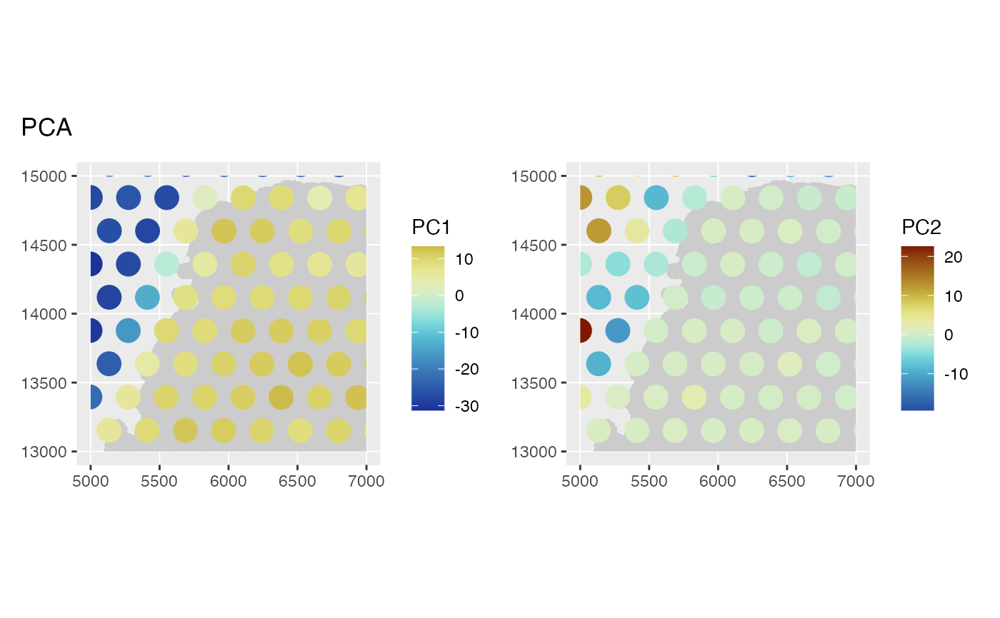

Such as plotting the value of projection of gene expression of each cell to a principal component in space. At present, this function does not work for the 3D array of geographically weighted PCA (GWPCA), but a future version will deal with GWPCA results.
Usage
spatialReducedDim(
sfe,
dimred,
ncomponents,
colGeometryName = 1L,
sample_id = NULL,
ncol = NULL,
ncol_sample = NULL,
annotGeometryName = NULL,
annot_aes = list(),
annot_fixed = list(),
exprs_values = "logcounts",
aes_use = c("fill", "color", "shape", "linetype"),
divergent = FALSE,
diverge_center = NULL,
annot_divergent = FALSE,
annot_diverge_center = NULL,
size = 0,
shape = 16,
linetype = 1,
alpha = 1,
color = NA,
fill = "gray80",
scattermore = FALSE,
pointsize = 0,
...
)Arguments
- sfe
A
SpatialFeatureExperimentobject.- dimred
A string or integer scalar indicating the reduced dimension result in
reducedDims(sfe)to plot.- ncomponents
A numeric scalar indicating the number of dimensions to plot, starting from the first dimension. Alternatively, a numeric vector specifying the dimensions to be plotted.
- colGeometryName
Name of a
colGeometrysfdata frame whose numeric columns of interest are to be used to compute the metric. UsecolGeometryNamesto look up names of thesfdata frames associated with cells/spots.- sample_id
Sample(s) in the SFE object whose cells/spots to use. Can be "all" to compute metric for all samples; the metric is computed separately for each sample.
- ncol
Number of columns if plotting multiple features. Defaults to
NULL, which means using the same logic asfacet_wrap, which is used bypatchwork'swrap_plotsby default.- ncol_sample
If plotting multiple samples as facets, how many columns of such facets. This is distinct from
ncols, which is for multiple features. When plotting multiple features for multiple samples, then the result is a multi-panel plot each panel of which is a plot for each feature facetted by samples.- annotGeometryName
Name of a
annotGeometryof the SFE object, to annotate the gene expression plot.- annot_aes
A named list of plotting parameters for the annotation sf data frame. The names are which geom (as in ggplot2, such as color and fill), and the values are column names in the annotation sf data frame. Tidyeval is NOT supported.
- annot_fixed
Similar to
annot_aes, but for fixed aesthetic settings, such ascolor = "gray". The defaults are the same as the relevant defaults for this function.- exprs_values
Integer scalar or string indicating which assay of x contains the expression values.
- aes_use
Aesthetic to use for discrete variables. For continuous variables, it's always "fill" for polygons and point shapes 21-25. For discrete variables, it can be fill, color, shape, or linetype, whenever applicable. The specified value will be changed to the applicable equivalent. For example, if the geometry is point but "linetype" is specified, then "shaped" will be used instead.
- divergent
Logical, whether a divergent palette should be used.
- diverge_center
If
divergent = TRUE, the center from which the palette should diverge. IfNULL, then not centering.- annot_divergent
Just as
divergent, but for the annotGeometry in case it's different.- annot_diverge_center
Just as
diverge_center, but for the annotGeometry in case it's different.- size
Fixed size of points or width of lines, including outlines of polygons. For polygons, this defaults to 0, meaning no outlines. For points and lines, this defaults to 0.5. Ignored if
size_byis specified.- shape
Fixed shape of points, ignored if
shape_byis specified and applicable.- linetype
Fixed line type, ignored if
linetype_byis specified and applicable.- alpha
Transparency.
- color
Fixed color for
colGeometryifcolor_byis not specified or not applicable, or forannotGeometryifannot_color_byis not specified or not applicable.- fill
Similar to
color, but for fill.- scattermore
Logical, whether to use the
scattermorepackage to greatly speed up plotting numerous points. Only used for POINTcolGeometries. If the geometry is not POINT, then the centroids are used. Recommended for plotting hundreds of thousands or more cells where the cell polygons can't be seen when plotted due to the large number of cells and small plot size such as when plotting multiple panels for multiple features.- pointsize
Radius of rasterized point in
scattermore. Default to 0 for single pixels (fastest).- ...
Other arguments passed to
wrap_plots.
Value
Same as in plotSpatialFeature. A ggplot2 object
if plotting one component. A patchwork object if plotting multiple
components.
Examples
library(SFEData)
library(scater)
sfe <- McKellarMuscleData("small")
#> snapshotDate(): 2022-10-24
#> see ?SFEData and browseVignettes('SFEData') for documentation
#> loading from cache
sfe <- logNormCounts(sfe)
sfe <- runPCA(sfe, ncomponents = 2)
spatialReducedDim(sfe, "PCA", 2, "spotPoly",
annotGeometryName = "tissueBoundary",
divergent = TRUE, diverge_center = 0
)

# Basically PC1 separates spots not on tissue from those on tissue.